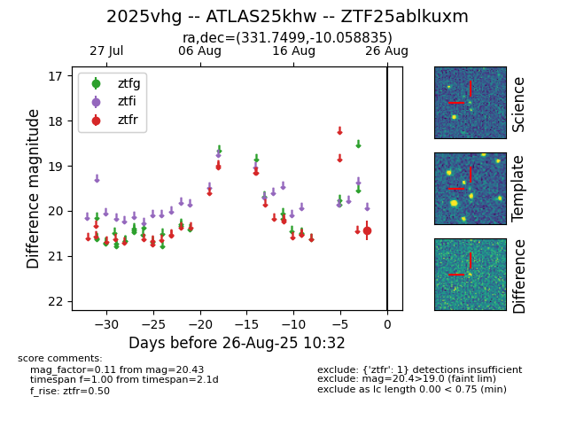

FINK: ZTF25ablkuxm
Lasair: ZTF25ablkuxm
ALeRCE: ZTF25ablkuxm
TNS: 2025vhg
YSE: 2025vhg
ZTF25ablkuxm (ztf,fink)
2025vhg (tns,yse)
ATLAS25khw (atlas)
equatorial (ra, dec) = (331.7499,-10.05884)
galactic (l, b) = (48.7027,-47.72284)

last atlaso=20.13, ztfr=20.01
1 atlaso, 5 ztfr detections